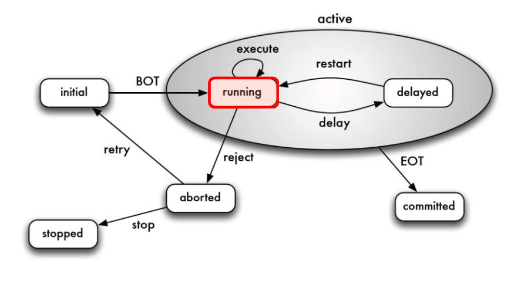

SQL
Datentypen
| Datentyp | Erklärung |
|---|---|
| CHAR(n)/Character(n) | String mit einer fixen Länge |
| Char Varying(n)/VARCHAR(n) | String, welcher beliebig Lang sein kann . Kann aber ein Limit haben |
| TEXT | String, mit beliebiger Länge |
| Int/INTEGER | Ganzzahl |
| REAL | Fliesskomazahl |
| NUMERIC(p, s)/DECIMAL(p, s) | Festkomazahl. p steht für die Stellen nach dem 0, sfür die Stellen nach vor dem 0 |
| INDEX | Shortcut für |
Domains
Domains sind Typenalias.Domain erstellen
create domain <name> as <datentyp>
Der Name ist der Name, welcher zukünfigt als Typ verwendet werden können, der Datentyp ist ein Typ, wie "CHAR(10)".
Domain Löschen
Löscht eine Domain
drop domain <name
Schemas
Schema Erstellen
Um eine neues Schema zuerstellen zu können:
create schema <name> [authorization <user>]
In Postgressql ist ein Schema ein Teil einer Datenbank. In MySQL diese Terme kann man gleich setzten.
Schema Löschen
drop schema <name> [cascade]
Löscht das angegebene Schema
- "casecade" löscht ohne nach zu fragen.
Schema auswählen
use schema <name>
Mit diesem Befehl wird ein Schema ausgewählt, dass für zukünfigite Befehle, wie create table benützt werden soll.
Tabellen
Tabellen Erstellen
Um eine neue Tabelle erstellen zu können:
create table <tablename> (<columnName1> <columnTyp1> <optionen> | table constraint, ...)
- optionen
NOT NULL- Attribut kann nicht null sein (kann nicht benannt werden)DEFAULT (<value>)- Setzt ein Default WertCHECK (<condition>)- Das Attribut muss die Kondition erfüllenPRRIMARY KEY(impliziertNOT NULL) - Definiert ein Attribut als Primary KeyUNIQUE- Attribute muss einzigartig sein- table constraint - Anstatt ein Attribut kann auch ein Table Constraint definiert werden:
[CONSTRAINT <constraintName>] <optionen von oben>
Tabelle Kopieren
Wenn man das Schema (ohne Constraints) kopieren möchte, kann man folgenden Befehl benützten: CREATE TABLE <tablename> LIKE <table_copy_from> [INCLUDING CONSTRAINTS]
Mit INCLUDING CONSTRAINTS können auch die Constraints übernommen werden.
Um mit Daten eine neue Tabelle zu erstellen, kann man auch den folgenden Befehl benützten: CREATE TABLE <tablename> AS (<subquery>) . Dies erstellt eine neue Tabelle auf Basis der Subquery.
Eine normale Tabelle kann nicht mit update materialized view geupdated werden.
Tabellen Löschen
drop table <tablename> [cascade]
Löscht die angegebene Tabelle
- "casecade" löscht ohne nach zu fragen.
Tabellen Ändern
ALTER TABLE <tableName> ADD <column|contraint>
ALTER TABLE <tableName> DROP (<column>|CONSTRAINT <contraint>) [CASCADE]
ALTER TABLE <tableName> ALTER <column>|<contraint> [SET DEFAULT <default_value>]
Constraints
Arten
NOT NULL- Attribut kann nicht null sein (kann nicht benannt werden)DEFAULT (<value>)- Setzt ein Default WertCHECK (<condition>)- Das Attribut muss die Kondition erfüllenPRRIMARY KEY [(<spalte1>, ...)](impliziertNOT NULLundUNIQUE) - Definiert ein oder mehrere Attribute als Primary Key. (max 1 pro Tabelle)FOREIGN KEY <spalte1> REFERENCES <table> [<spalte>]- erstellt ein Foreign KeyUNIQUE [(<spalte1>, ...)]- Attribute muss einzigartig sein
Bei FOREIGN KEY kann zusätzlich noch folgendes angegeben werden:
ON UPDATE CASCADE- wenn der Primary Key geändert wird, werden die Foreign Keys auch geändert.ON DELETE CASCADE- wenn der Primary Key gelöscht wird, werden Tupels, welche darauf referenzieren auch gelöscht.
Beispiel:
CREATE TABLE Player (
name VARCHAR(255),
club_name VARCHAR(255),
CONSTRAINT club_name_constraint FOREIGN KEY (club_name) REFERENCES Club (name)
ON UPDATE CASCADE ON DELETE CASCADE
)
Daten Hinzufügen
INSERT INTO <tabelle> [(<attribut1>, ...)] VALUES (<value1>,...)
INSERT INTO <tabelle> [(<attribut1>, ...)] (<query>)
Fügt ein Tupel in eine Tabelle ein. Ebenfalls kann anstatt fixe Werte ein SELECT angegeben werden. In diesem Fall werden die Werte von der Query übernommen
Daten Updaten
UPDATE <tableName> SET <attribut1> = <value1> , ... [WHERE <condition>]
Ändert alle Tupels, bei welchen die Kondition zutrifft. Falls kein WHERE angegeben wurde, werden alle Tupels in der Spalte geändert.
Daten Abfragen
SELECT <spalte1>, ... FROM <tabellen> [WHERE <condition>] [GROUP BY <spalte>, ... [HAVING <condition>]] [ORDER BY <column> [ASC|DESC]] [LIMIT <limit>] [OFFSET <start>]
-
Als Spalte kann folgendes angegeben werden
-
Spalten von Tabellen vom FROM-Teil
- Mathe/Funktionen mit spalten (z.B. saler * 1.2 + 1000 als spalte)
DISTINCT <spalte>- dies eliminiert Duplikate in der angegebenen Spalte- '*' steht für alle Spalten vom FROM-Teil
- Konstante (z.B. 1)
- Aggregate Funktionen, wie
AVG(<spalte>),SUM(<spalte>). Dafür sollte aber auchGROUP BYspezifiziert sein - Jede "Spalte" von dieser Liste kann mit
AS <name>umbenennt werden - Mit
EXTRACT (YEAR from <spalte>)kann z.B. das Jahr von einem Datum extrahiert werden - Mit
CASE WHEN <condition> THEN <value1> [WHEN <condition> THEN <vallue2>] ELSE <valueN> ENDkann eine "If"-Bedinung gestallten werden - Mit
COALESCE(<args1>, <argN>, ...)wird das erste Argument zurück geben, welches nicht Null ist
-
Als tabellen kann folgendes geschrieben werden:
-
Eine oder mehrere Tabellen. Wenn mehrere Tabellen definiert werden, wird das Kreuzprodukt gebildet
-
Nach einer Tabelle kann ein Name angegeben werden (z.B.
BestellPosition BPBestellPostion könnte in der Query als BP benutzt werden) -
<tabelle> CROSS JOIN <tabelle>- bildet das Kreuzprodukt -
<tabelle> LEFT JOIN <tabelle>- Alle Einträge von der linken Seite werden übernommen. Wenn keine Eintrag auf der rechten Seite gefunden wird, sind die entsprechenden SpaltenNULL -
<tabelle> RIGHT JOIN <tabelle>- Alle Einträge von der rechten Seite werden übernommen. Die Spalten der linken Seite werdenNULL, wenn kein Eintrag zu der rechten Seite gefunden wurde. -
<tabelle> OUTER JOIN <tabelle>- LEFT und RIGHT JOIN kombiniert -
<tabelle> FULL OUTER JOIN <tabelle>- -
<tabelle NATURAL FULL OUTER JOIN <tabelle>- -
<tabelle> [INNER] JOIN <tabelle>- Liefert nur Resultate, welche auf beiden Tabellen einen Eintrag haben. Es gibt den alternativ SyntaxSELECT * FROM a, b WHERE a.x = b.x -
<tabelle> NATURAL JOIN <tabelle>- Ist das Equivalente zu \(\bowtie\). Es werden gemeinsame Attribute benutzt. Falls es keine gibt, wird ein Kreuzprodukt gebildet -
Subqueries -
<subquery> AS <variable>DasASweisst der Subquery einen Namen zu, welchen man wie als Tabellennamen benutzten kann -
conditions
-
<column> LIKE <likeStr>Like funktioniert ählich, wie=, nur das%anstatt beliebiege Zeichen eingesetzt werden können und_als ein bestimmtes Zeichen. Dies funktioniert nur für Strings -
<column> BETWEEN <start> AND <end>Findet alle Werte zwischen dem start und end (inklusiv start und end). Dies funktioniert auch mit Strings oder Daten -
<column> IS [NOT] NULL- prüft, ob ein WertNULList -
<>- steht für nicht gleich, wie != in den meisten Sprachen -
EXISTS (subquery)- überprüft, ob die subquery etwas zurück geliefert hat -
<column> IN (<wert1>, ...)ODER<column> IN (<subquery>)- Stelltsicher, dass der Wert der Spalte in der Wertelist ist oder in der Subquery gefunden wird. Die Subquery muss eine Spalte zurück geben oder der<column>-Teil muss ein Tupel sein (wie(<column1>, <column2>, ...) IN (select <column1>, <column2>, ...) from ...). Die Reihenfolge wird beachtet, nicht die Namen selbst! -
<column> NOT IN (<wert1>, ...)oder<column> NOT IN (<subquery>)- Gleich wieINnur, dass der Wert der Spalte nicht in der Werteliste oder Subquery vorkommen darf. -
ORDER BY -
ASC- Aufsteigend (default) -
DESC- Absteigend
Reihenfolge
In der folgenden Reihenfolge werden SQL Queries abgearbeitet. Speziell wo WHEREund HAVING steht.
-
FROM
-
WHERE
-
GROUP BY
-
HAVING
-
SELECT
-
ORDER BY
Aggregatsfunktionen
SQL kennt folgende Aggregationsfunktionen COUNT(<spalte>), AVG(<spalte>), SUM(<spalte>), MIN(<spalte>), MAX(<spalte>)
(AVG(<splate>) ist nicht dasselbe, wie SUM(<spalte>)/COUNT(<spalte>), da COUNT auch NULL Werte zählt)
Die Aggregationsfunktionen operieren auf den Gruppen, welche von GROUP BY erstellt wurde.
Wichtig zu erwähnen ist, dass HAVING auf dem aggregiertem Ergebniss filtert und WHERE vor dem Gruppieren.
In einer Aggregationsfunktion kann DISTINCT verwendet werden (wie COUNT(DISTINCT <spalte>)). Somit werden nur verschiedene Werte gezählt, summiert,...
Subqueries
Abfragen können miteinander verbunden werden:
<query> (UNIION | INTERSECT | EXCEPT) [ALL|DISTINCT] <query>
UNION ALL= Bag ConcatenationINTERSECT ALL= \(\cap\)EXCEPT ALL= \
Ohne ALL wird automatisch DISTINCT gebraucht, was Duplikate entfernt.
ALL und ANY
where <column> <|>|<=|>= [NOT] ALL(<subquery>)
where <column> <|>|<=|>= [NOT]ANY (<subquery>)
WHERE alter > all(select alter from person) würde sicher stellen, dass das Alter grösser ist als alle Alter der Personen der Tabelle Person.
WHERE alter > ANY(select alter from person) würde sicher stellen, dass das Alter grösser ist als mindestens ein Alter einer Person der Tabelle Person.
EXISTS
where [NOT] EXISTS(<subquery>)
EXISTS wird true, wenn die Subquery kein leeres Resultat zurück bringt.
Beispiel: select * from person as P where exists (select 1 from angestellte as A where P.name=A.name)angestellte
Common Table Expression (CTE)
Mit dem Syntax: WITH <cte_name> AS (<select_query>)<select_query2>
<select_query2> kann nun eine Tabelle <cte_name> benützten. Dies kann Abfragen vereinfachen, welche viele Subqueries haben.
Views
Materialized View
Eine materialized View updaten nicht automatisch, sondern muss manuell geupdated werden mit REFRESH MATERIALIZED VIEW <name>.
Dies kann auch mit Triggers erledigt werden. So könnte man z.B. nach einem Zeitintervall die Materialized View updaten.
View erstellen
CREATE [MATERIALIZED] VIEW <name> AS <abfrage>
Damit wird eine View erstellt. Dies kann nützlich sein, um die Schreibarbeit zu minimieren. Ebenfalls kann es dazu verwendet werden, Rechte auf nur einen Teil einer Tabelle zu verteilen.
Views können auch von anderen Views abhängig sein.
Wenn eine View von mehreren Tabellen abhängig ist (oder andere Speziallfälle), können keine neue Daten eingefügt werden. Wenn eine View mit AS select * from <tabelle> erstellt, dann können Daten geändert werden.
View ändern
ALTER VIEW <name> ..
Kann dazu verwedet werden, um verschiedene Eigenschaften einer View zu ändern. Um die Spalten einer View zu ändern, ist es aber einfacher einfach die View zu löschen und neu zu erstellen.
View löschen
DROP VIEW <name>
Damit wird eine View gelöscht.
Stored Procedures/Funktion
- Vorteile
- Reduktion von Datenverkehr zwischen Client und DBMS
- Sehr komplexe Abfragen sind möglich
- Sind verwendtbar von mehreren Applikationen
- Nachteile
- Syntax nicht standardisiert
- Fehlerbehandlung ist umständlich
- Unkonfortable zum Entwickeln
- (Vermutlich noch ein Ort mehr, an dem dieselbe Logik implementiert wird (z.B. in HTML/JS, Java Server und noch DBMS))
CREATE PROCEDURE <name>
ALTER PROCEDURE <name>...
DROP PROCEDURE <name>
CREATE FUNCTION <name>
ALTER FUNCTION <name>...
DROP FUNCTION <name>
Die Grundstruktur einer Funktion sieht folgendermassen aus:
CREATE OR REPLACE FUNCTION <name>() RETURNS <returnType> AS
$body$
BEGIN
<mainLogicBlock>
EXCEPTION
<exceptionBlock>
END
$body$
Mit SELECT <name>() kann man diese Funktion danach aufraufen.
Variabeln
<name> [CONSTANT] <type> [NOT NULL] <expression>
<name> [CONSTANT] <type> [NOT NULL] DEFAULT <expression>
Mit dem obigen SQL können Variabeln in einer Funktion erstellt werden.
Cursor
Mit OPEN <cursor_name> kann der Cursor geöffnet werden und mit CLOSE <cursor_name> wieder geschlossen.
CREATE OR REPLACE FUNCTION Show_AlleBesuchernamen()
RETURNS VOID AS $$
DECLARE
rec_Besucher record;
c_Namen CURSOR FOR SELECT Name,Vorname FROM Besucher;
BEGIN
OPEN c_Namen;
LOOP
FETCH c_Namen INTO rec_Besucher;
EXIT WHEN NOT FOUND;
RAISE NOTICE 'Name: % Vorname: % ',rec_Besucher.Name, rec_Besucher.Vorname;
END LOOP;
CLOSE c_Namen;
END; $$
LANGUAGE plpgsql;
Trigger
Triggers werden ausgeführt, wenn ein sich eine Tabelle ändert. Einen Trigger kann für INSERT, UPDATE und DELETE definiert werden.
Mit den typeschen SQL Statements können Triggers erstellt werden.
CREATE TRIGGER <name> (BEFORE|AFTER|INSTEAD OF) ON <tabelle> FOR EACH ROW EXECUTE PROCEDURE <procedure/function>()
ALTER TRIGGER <name> (DISABLE|ENABLE)
DROP TRIGGER <name>
Index
Mit CREATE INDEX <name> on <table>(<column>, ...) kann ein Index erstelt werden und mit DROP INDEX <name> weder gelöscht werden.
Ein Index hat einige Vorteile, aber auch Nachteille:
-
Vorteil:
-
Zugriffzeit Da die Daten nun eine Sortierung haben, kann die DB schneller auf die Daten zugreifen
-
Nachteile:
-
Speicherplatz Der Index böntigt platz
-
Zeit Um den Index zu erstellen und nocht wichtiger beim Updaten, benötigt die DB Zeit, um den Index neu zu schreiben
Wann lohnt sich ein Index?
-
Attribute, welche oft Abgefragt werden
-
Femdschlüssel sollten indexiert werden
-
Generell, Attribute, über die oft gejoint weden, sollten indexiert werden
-
Attribute mit niedriger Kardinalität sollten nicht indexiert weden (dafür gibt es spezielle Indexstrukturen, welche wir allerdings nicht behandeln)
Dünn- vs. Dichtbesetzer Index
Transaktionen
Im folgenden Bild sind die verschiedenen Statis einer Transakti

Lost-Update
- Es darf nicht gleizeitig aus zwei Transaktionen geschrieben werden. Dies verhindert ein Lost-Update